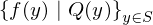
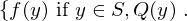
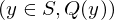
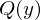
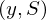

Common general_comprehension_fy of type SetOfAll¶
from the theory of proveit.logic.sets¶
In [1]:
import proveit
# Automation is not needed when only building an expression:
proveit.defaults.automation = False # This will speed things up.
proveit.defaults.inline_pngs = False # Makes files smaller.
%load_expr # Load the stored expression as 'stored_expr'
# import the special expression
from proveit.logic.sets import general_comprehension_fy
In [2]:
# check that the built expression is the same as the stored expression
assert general_comprehension_fy == stored_expr
assert general_comprehension_fy._style_id == stored_expr._style_id
print("Passed sanity check: general_comprehension_fy matches stored_expr")
In [3]:
# Show the LaTeX representation of the expression for convenience if you need it.
print(general_comprehension_fy.latex())
In [4]:
# display the expression information
general_comprehension_fy.expr_info()
Out[4]:
| core type | sub-expressions | expression | |
|---|---|---|---|
| 0 | Operation | operator: 1 operand: 2 |  |
| 1 | Literal |  | |
| 2 | Lambda | parameter: 14 body: 3 | |
| 3 | Conditional | value: 4 condition: 5 |  |
| 4 | Operation | operator: 6 operand: 14 |  |
| 5 | Operation | operator: 7 operands: 8 |  |
| 6 | Variable |  | |
| 7 | Literal |  | |
| 8 | ExprTuple | 9, 10 |  |
| 9 | Operation | operator: 11 operands: 12 |  |
| 10 | Operation | operator: 13 operand: 14 |  |
| 11 | Literal |  | |
| 12 | ExprTuple | 14, 15 |  |
| 13 | Variable |  | |
| 14 | Variable |  | |
| 15 | Variable |  |